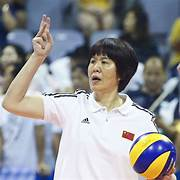

Em 1973 seu primeiro contato com voleibol ocorreu em suas horas vagas na escola de esportes do Ginásio dos Trabalhadores em Pequim e um ano depois juntou-se a equipe de vôlei do Colégio Jing Lun Chen. Ingressou em seguida na turma de treinamento de voleibol de nível II de desporto escolar em Pequim. Em 1976, tornou-se integrante da equipe de voleibol da categoria juvenil e logo subiu de categoria, jogando na equipe do municipal comandada por Yuan Weimin em 1976 e convocada para Seleção Chinesa nal no final de 1978 e nesta liderava como atacante e não demorou para ser capitã adjunta da equipe, depois foi a capitã e atuou também como assistente técnico. Em 1981 conduziu Seleção Chinesa de Voleibol Feminino na conquista do primeiro título a nível mundial na 3ª edição da Copa do Mundo de Voleibol Feminino de 1981. Em 1982, seguiu colecionando títulos importantes como ouro no Campeonato Mundial de Voleibol Feminino de 1982, Jogos Olímpicos de Verão de 1984 e o bicampeonato da Copa do Mundo de Voleibol Feminino de 1985, um retrospecto de quatro vitórias consecutivas em 5 anos. Lang Ping ficou conhecida como a "Martelo de Ferro" devido aos poderosos ataques, provenientes por altos saltos, com elegância no movimento do braço , com rapidez e fortes socos para baixo, demonstrando uma variação estupenda e muita tática com altos índices de aproveitamento.
